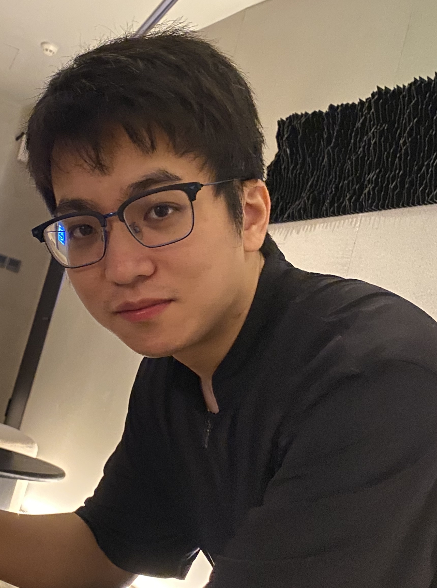

|
Taicheng Guo
PhD Student |

Home | Publications | Competition Awards | Service | CV |


I am a second-year PhD student at University of Notre Dame beginning in 2023 Spring, advised by Prof. Xiangliang Zhang. I am also proud to be a member of the NSF Center for Computer-Assisted Synthesis (C-CAS), where I am currently working as a research assistant.
My long-term research goal is to develop machines with enhanced planning and reasoning abilities. The central theme of my current research is to improve these capabilities from diversity, uncertainty-aware, learning from feedback, scalability, step-by-step perspectives.
For technical methodologies, my studies encompass LLM, LLM-based Agents, LLM Interpretability and Mixture-of-experts.
For practical applications, my studies encompass AI4Science, Bayesian Optimization, Recommender Systems, all of which naturally require better planning and reasoning capabilities of the intelligence systems.
Previously, I received my M.S. degree in computer science from King Abdullah University of Science and Technology (KAUST). I also received my B.Eng. degree in software engineering from Xidian University.
I am actively seeking a research intern opportunity about large language models! Additonally, if you are seeking any form of academic cooperation, please feel free to contact me at tguo2@nd.edu or wechat ID: Great_buckwheat
-
Large Language Model based Multi-Agents: A Survey of Progress and Challenges.
Taicheng Guo, Xiuying Chen, Yaqi Wang, Ruidi Chang, Shichao Pei, Nitesh V. Chawla, Olaf Wiest, Xiangliang Zhang.
In Submission
-
Modeling non-uniform uncertainty in Reaction Prediction via Boosting and Dropout.
Taicheng Guo, Changsheng Ma, Xiuying Chen, Bozhao Nan, Kehan Guo, Shichao Pei, Nitesh V. Chawla, Olaf Wiest, Xiangliang Zhang.
In Submission
-
What can Large Language Models do in chemistry? A comprehensive benchmark on eight tasks.
Taicheng Guo, Kehan Guo, Bozhao Nan, Zhenwen Liang, Zhichun Guo, Nitesh V. Chawla, Olaf Wiest, Xiangliang Zhang.
In the Conference on Neural Information Processing Systems Dataset and Benchmark Track (NeurIPS 2023)
-
Few-shot News Recommendation via Cross-lingual Transfer.
Taicheng Guo, Lu Yu, Basem Shihada, Xiangliang Zhang.
In the Proceedings of the ACM Web Conference (WWW 2023)
-
Data Interpreter: An LLM Agent For Data Science.
Sirui Hong, Yizhang Lin, Bangbang Liu, Binhao Wu, Danyang Li, Jiaqi Chen, Jiayi Zhang, Jinlin Wang, Lingyao Zhang, Mingchen Zhuge, Taicheng Guo, Tuo Zhou, Wei Tao, Wenyi Wang, Xiangru Tang, Xiangtao Lu, Xinbing Liang, Yaying Fei, Yuheng Cheng, Zongze Xu, Chenglin Wu, Li Zhang, Min Yang, Xiawu Zheng.
Preprint
-
A Property-Guided Diffusion Model for Generating Molecular Graphs.
Changsheng Ma, Taicheng Guo, Qiang Yang, Xiuying Chen, Xin Gao, Shangsong Liang, Nitesh Chawla, Xiangliang Zhang
In the IEEE International Conference on Acoustics, Speech and Signal Processing.(ICASSP 2024)
-
SceMQA: A Scientific College Entrance Level Multimodal Question Answering Benchmark.
Zhenwen Liang, Kehan Guo, Gang Liu, Taicheng Guo, Yujun Zhou, Tianyu Yang, Jiajun Jiao, Renjie Pi, Jipeng Zhang, Xiangliang Zhang
Preprint
-
Rethinking Scientific Summarization Evaluation: Grounding Explainable Metrics on Facet-aware Benchmark.
Xiuying Chen, Tairan Wang, Qingqing Zhu, Taicheng Guo, Shen Gao, Zhiyong Lu, Xin Gao, Xiangliang Zhang
Preprint
-
Defending Jailbreak Prompts via In-Context Adversarial Game.
Yujun Zhou, Yufei Han, Haomin Zhuang, Taicheng Guo, Kehan Guo, Zhenwen Liang, Hongyan Bao, Xiangliang Zhang
Preprint
-
KDD Cup 2020 Regular Machine Learning Competition Track.
Ranked 2nd place. 🥈
-
NeurIPS 2020 Black-Box Optimization Challenge.
Ranked 2nd place in warm-start friendly leaderboard. 🥈
-
Kaggle Arabic Sentiment Analaysis.
Ranked 5th place.
-
Kaggle Expert
-
IEEE Computer Society Global student challenge.
Ranked 1st place. 🏅
Last update: Mar, 2024. Webpage template borrows from Stephen Bach.